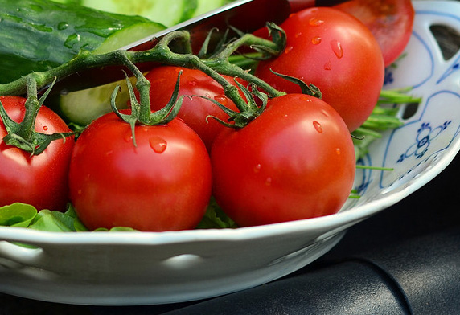

Fruits & Vegetables
Design
首页
关于我们
新鲜蔬果
果蔬资讯
联系我们
关于我们

我们是谁？
××××果蔬（集团）有限公司是由拥有50多年历史的××××蔬菜公司于1999年3月按现代化企业制度要求改制而成。集团以蔬菜、水果、粮油、肉类、冻品、水产、南北干货以及花卉等农产品批发市场经营管理、绕向越来越多的人提供最好吃的和性价比极高的水果，致力于水果产业链和水果专营连锁业态的发展，致力于水果善知识和文化的创造与传播。到2030年，发展成为在全球拥有百万亩以上种植基地和15000家以上门店、世界第一的果业公司！
我们是谁？
××××果蔬（集团）有限公司是由拥有50多年历史的××××蔬菜公司于1999年3月按现代化企业制度要求改制而成。集团以蔬菜、水果、粮油、肉类、冻品、水产、南北干货以及花卉等农产品批发市场经营管理、绕向越来越多的人提供最好吃的和性价比极高的水果，致力于水果产业链和水果专营连锁业态的发展，致力于水果善知识和文化的创造与传播。到2030年，发展成为在全球拥有百万亩以上种植基地和15000家以上门店、世界第一的果业公司！
战略定位
随着人们生活水平的提高，健康安全的进口类中高端食品消费必然会成为社会主流的消费趋势，将利用顺丰速运集团资源，放眼全球优质美食，逐步实现全球产地直采，缩短供应链，让用户享受到真正0污染、安全健康、优质优价的全球美食。 我们愿意为您想得更多、做得更多，我们希望和您一起，成为高品质生活方式的引导者和健康生活理念的传播者。
战略定位
随着人们生活水平的提高，健康安全的进口类中高端食品消费必然会成为社会主流的消费趋势，将利用顺丰速运集团资源，放眼全球优质美食，逐步实现全球产地直采，缩短供应链，让用户享受到真正0污染、安全健康、优质优价的全球美食。 我们愿意为您想得更多、做得更多，我们希望和您一起，成为高品质生活方式的引导者和健康生活理念的传播者。